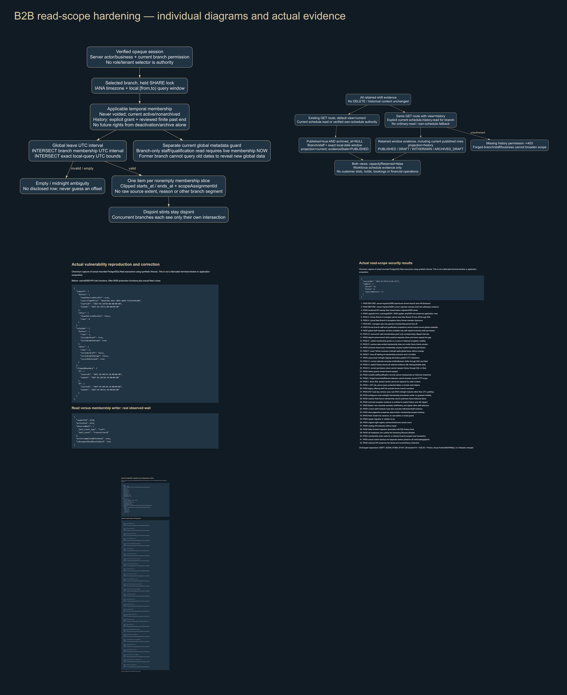
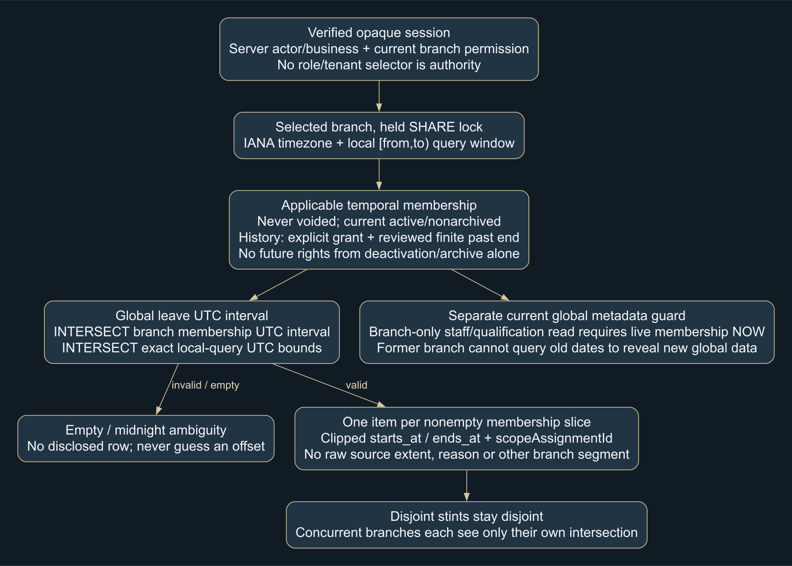
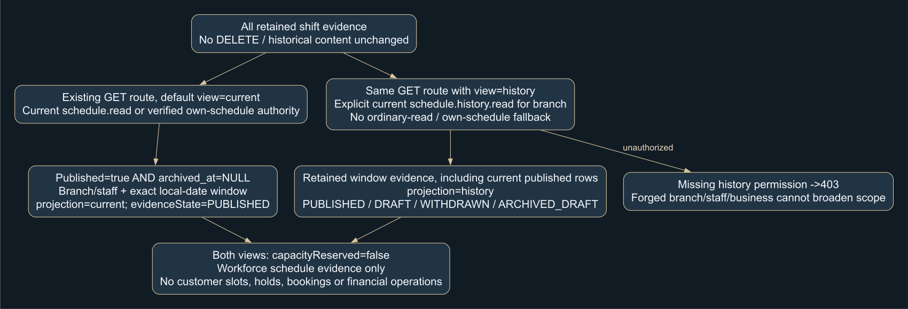
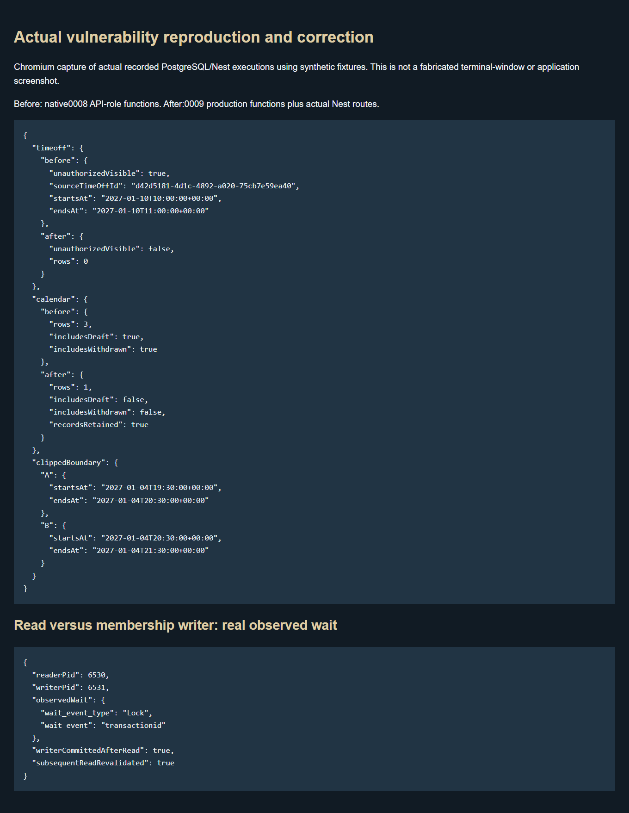
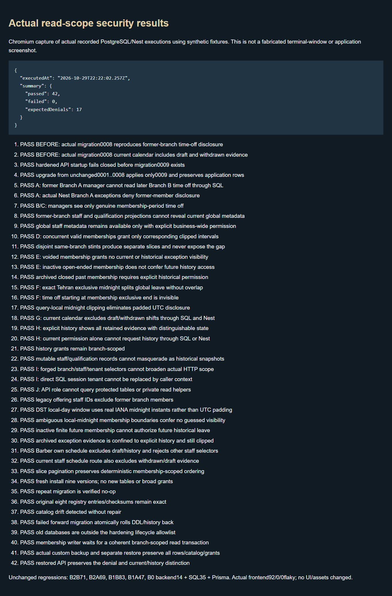
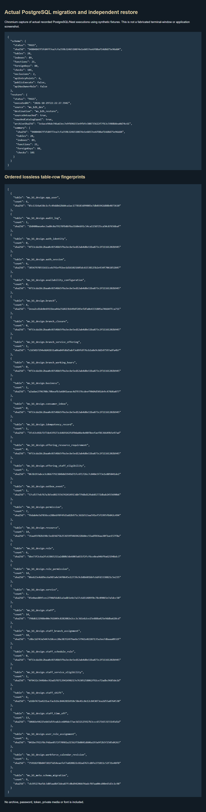

Former-branch leave privacy corrected through exact interval clipping. Current calendar excludes draft/withdrawn records; explicit authorized history preserves evidence. Homepage/Booking and scheduling commands remain unchanged.
Actual tests: targeted42/0; unchanged71/69/83/47/14/35/Prisma and92 frontend pass. Fresh/upgrade/no-op/drift/rollback, real read/write wait and independent restore verified.
Review gate: privacy/history grants and production identity/retention remain unapproved. No B3/B4, quotes, holds, allocation, customer booking, payments or deployment.






All execution captures render actual result records; private media/fonts/tokens/dumps/history are excluded. Stop for review.